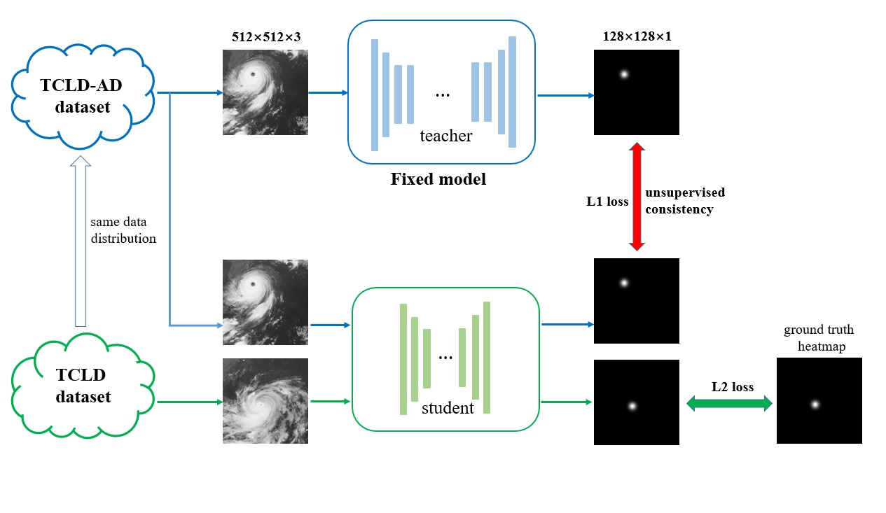
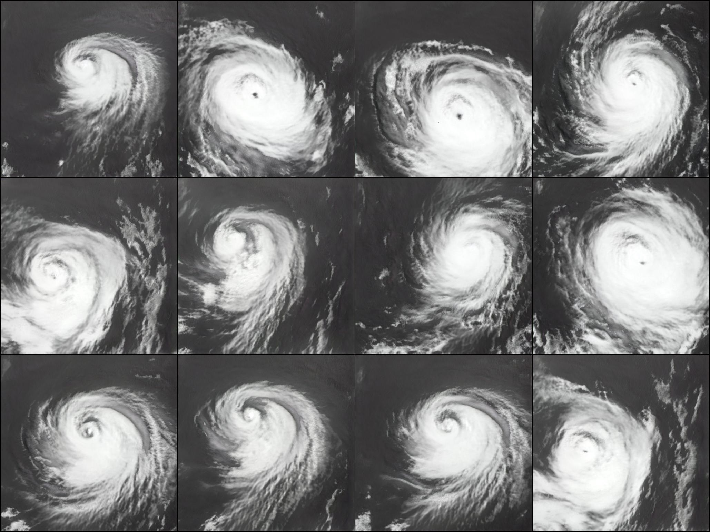

Improving Typhoon Center Location Models by Augmented Typhoon Image and Distillation Methods
Chongqing University of Technology

Abstract
Typhoon center location needs to timely and efficiently deter-mine the typhoon center position from infrared satellite cloud imagery. In recent years, with the development of machine learning, many data-driven learning models have been successfully applied to typhoon center location problem. However, due to the lack of sufficient training data, the existing typhoon center location algorithm can be further optimized. In this paper, we use unconditional generative adversarial network to generate more high-quality training data, especially eyed typhoon samples. Meanwhile, in order to make full use of the generated samples and further improve the efficiency of the model, we use the idea of knowledge distillation to add these samples into the model training process as unsupervised additional knowledge. On the basis of existing work, we propose a supplementary large-scale typhoon center location dataset named TCLD-AD generated by GAN. Extensive experimental results and comparison demonstrate that additional use of TCLD-AD dataset and knowledge distillation can effectively improve the performance of the model. Compared with the existing state-of-the-art TCLNet model, we have achieved an accuracy improvement of 9.3% in eyed typhoon samples. On the other hand, compared with the state-of-the-art model, our method reduces the number of model parameters by 65% while achieving the same performance.
Examples

Downloads
Citation
@inproceedings